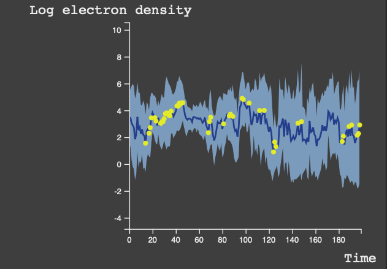

<div id="single-portfolio">
	<div id="portfolio-details" class="container">
		<a class="close-folio-item" href="#"><i class="fa fa-times"></i></a>
		
		<div class="row">
			<div class="col-sm-9">
				<div class="project-info">
					<h3>Trend Analysis</h3>
					<p>For time window selected, shows the electron density for specified donut cross section.</p>
				</div>
			</div>
			<!-- <div class="col-sm-3">
				<div class="project-details">
					<h3>Heatmap Details</h3>
					<p><span>Cluster: </span>Three clusters/blue colors (light, median, dark) representing high, median and low density for all nine rhos</p>
					<p><span>Hover:</span> Show statistics of the donut.</p>
					<p><span>Anomaly:</span> Anomalies are marked in grey according to the algorithm chosen.</p>
				</div>
			</div> -->
		</div>
	</div>
</div>
